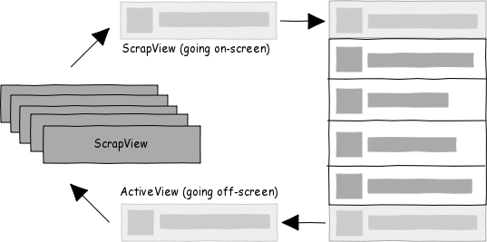
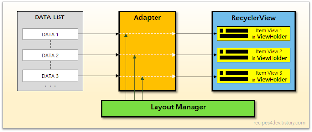

Recyclerview를 사용하는 이유
ListView

- 목록을 구현하는데 사용하는 레이아웃
- View를 재활용하는 방식으로, 화면에 보여질 뷰를 처음 inflate한 후 스크롤시 재활용하는 방식
- 화면에 보이지 않는 View도 미리 그려 놓는다.
재활용
- 특정 position이 보이면 getView()가 호출되고 화면에 아이템이 변경된다.
1
2
3
4
5
6
7
8
9
10
11
12
13
14
15
16
17
18
19
20
21
22
23
24
25
@Override
public View getView(int position, View view, ViewGroup viewGroup){
UserItem item= userItemItems.get(position);
if(view==null){
View itemView=layoutInflater.inflate(R.layout.item_friend, viewGroup, false);
TextView tvNickname=itemView.findViewById(R.id.tv_friend_nickname);
TextView tvEmail=itemView.findViewById(R.id.tv_friend_email);
tvNickname.setText(item.getNickname());
tvEmail.setText(item.getEmail());
return itemView;
}
else{
TextView tvNickname=view.findViewById(R.id.tv_friend_nickname);
TextView tvEmail=view.findViewById(R.id.tv_friend_email);
tvNickname.setText(item.getNickname());
tvEmail.setText(item.getEmail());
return view;
}
}
}
- 파라미터 view가 위 그림에서 재활용되는 ScrapView[]이다. view는 최초 한번만 null이 들어오고 이후 호출되면 이미 생성된 view가 들어오므로, 조건문을 통해 최초 한 번만(view==null) inflate하면 된다.
ViewHolder 패턴
- 아이템에 접근하기 위해 inflate된 view를 findViewById()로 찾는다. 이는 고비용을 야기할 수 있으므로, getTag(), setTag()를 이용하여 ViewHolder를 가져오고, 여기서 아이템에 접근하는 방식으로 사용한다.
- ViewHolder 패턴을 강제적으로 사용하지 않기 때문에, 이를 사용하지 않는다면 고비용의 findViewById()가 자주 호출될 수 있다.
RecyclerView
- RecyclerView는 Adapter를 사용하고, 메모리 참조를 유지하기 위해 ViewHolder를 만들어야 한다.
1
2
3
4
5
6
7
8
9
10
11
12
13
14
15
16
17
18
19
20
21
22
23
24
25
26
27
28
29
30
31
32
public class AdapterSample extends RecyclerView.Adapter<AdapterSample.ViewHolder> {
private ArrayList<String> mData = null;
public class ViewHolder extends RecyclerView.ViewHolder {
TextView tv_main;
public ViewHolder(@NonNull View itemView) {
super(itemView);
tv_main = itemView.findViewById(R.id.tv_main);
}
}
public AdapterSample(ArrayList<String> list){
mData = list;
}
@NonNull
@Override
public ViewHolder onCreateViewHolder(@NonNull ViewGroup parent, int viewType) {
Context context = parent.getContext();
LayoutInflater inflater = (LayoutInflater) context.getSystemService(
Context.LAYOUT_INFLATER_SERVICE);
View view = inflater.inflate(R.layout.rv_item_main, parent, false);
AdapterSample.ViewHolder vh = new AdapterSample.ViewHolder(view);
return vh;
}
@Override
public void onBindViewHolder(@NonNull ViewHolder holder, int position) {
String text = mData.get(position);
holder.tv_main.setText(text);
}
@Override
public int getItemCount() {
return mData.size();
}
}
onCreateViewHolder() 아이템 뷰를 위한 뷰홀더 객체를 생성하여 리턴한다.
onBindViewHolder() position에 해당하는 데이터를 뷰홀더의 아이템뷰에 표시한다.
getItemCount() 전체 데이터 개수를 리턴한다.
RecyclerView의 구성요소

리사이클러뷰는 Adapter, LayoutManager를 사용한다. 만들어진 각 아이템뷰는 ViewHolder에 저장되어 화면에 표시되고 필요에 따라 생성 또는 재활용(recycle)된다.
Adapter
- 사용자의 데이터 리스트로부터 아이템 뷰를 생성
LayoutManager
- 어떤 형태로 아이템을 배치할 것인지 결정
- RecyclerView의 아이템을 배치하고, 화면 밖으로 전환된 아이템을 재활용할 시기를 알려준다.
- ex) LinearLayoutManager, GridLayoutManager, StaggeredGridLayoutManager
ViewHolder
- 화면에 표시될 아이템 뷰를 저장하는 객체
- RecyclerViewHolder를 상속받아 구현한다.
- 구현된 뷰홀더는 Adapter로부터 onCreateViewHolder(), onBindViewHolder() 메소드를 오버라이드하여 각각 생성과 데이터 표시를 하여 화면에 출력한다.
참고
- [Android] 리스트뷰 포퍼먼스 팁 https://rednine.tistory.com/762
- [안드로이드] ListView vs RecyclerView https://woovictory.github.io/2019/01/03/Android-Diff-of-ListView-and-RecyclerView/#search
- Android RecyclerView Tutorial with Kotlin https://www.raywenderlich.com/1560485-android-recyclerview-tutorial-with-kotlin
- [Android] 디자인패턴 1 - 디자인패턴이란? https://jroomstudio.tistory.com/20